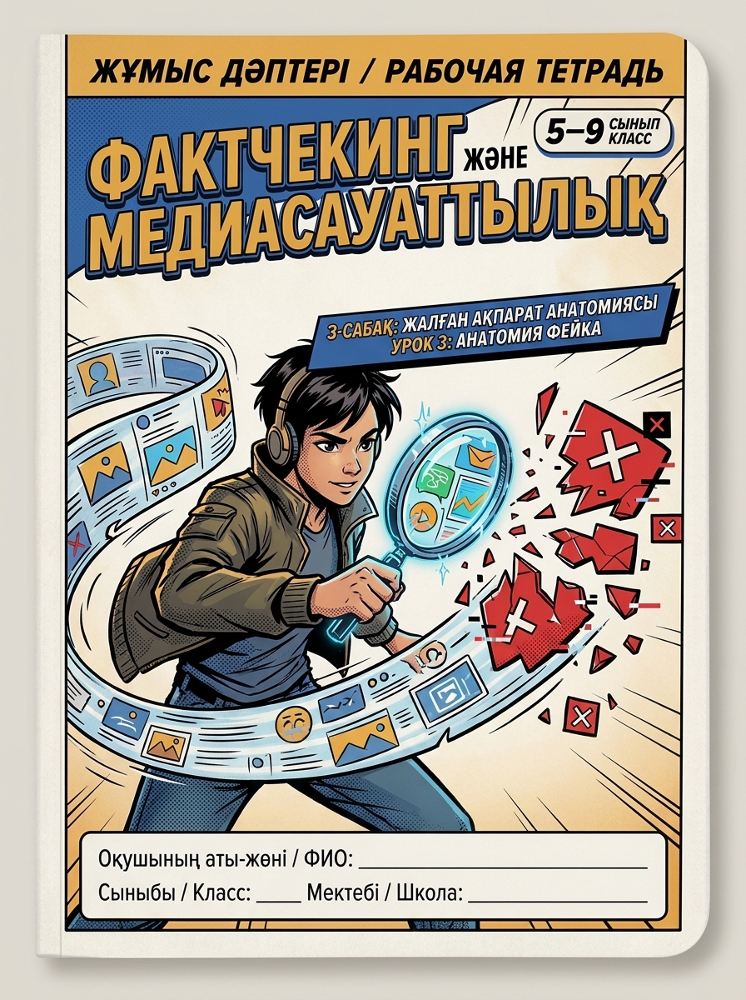

Бюро стандартов «МЕТОДИКО»
Кейс 3: Школы и Учителя • Программа аттестации «Ұстаз» + Тетрадь ученика
ГОСО РК 2026 • PISA
Перед вами демонстрационный образец и один из наглядных вариантов учебно-методического комплекса (УМК) от бюро «МЕТОДИКО». Все материалы являются базовыми примерами: под заказ мы проектируем любой курс полностью индивидуально под вашу школу, лицей или гимназию — с нанесением вашего официального логотипа, герба и фирменного стиля, под специфику и стаж ваших учителей, для любого класса и на любом языке обучения (казахском, русском или билингвальном).
Структурирован по 4 четвертям в соответствии с типовым учебным планом ГОСО РК 2026
Фокус: медиаграмотность, анализ первоисточников, логические ловушки, работа с нелинейным текстом
| № | Тема урока | Цель обучения (ЦО / Таксономия Блума) | Форма контроля (ФО) |
|---|---|---|---|
| 1 | Вводный инсайт: «Зачем развивать свой ум? Карта навыков XXI века». | Понимание 5.1.1 Самодиагностика Soft Skills | Колесо компетенций в тетради |
| 2 | Факт или мнение? Как отличить объективную реальность от манипуляции. | Анализ 5.1.2 Дифференциация фактов и оценок | Интерактивный тренажер тетради |
| 3 | ★ Анатомия фейка: проверка вирусных новостей и обратный поиск фото. | Применение 5.1.3 Верификация первоисточников | Кейс-стади в рабочей тетради (Демо-урок) |
| 4 | Когнитивные искажения: почему наш мозг попадается в ментальные ловушки. | Анализ 5.1.4 Определение эффекта толпы | Разбор рекламных постеров |
| 5 | Логика рассуждений: причинно-следственные связи и софизмы в спорах. | Оценка 5.1.5 Выявление ложных посылок | Мини-дебаты в парах |
| 6 | Читательская грамотность PISA: инфографики, таблицы и диаграммы. | Анализ 5.1.6 Извлечение скрытых данных | Анализ отчета экологии города |
| 7 | Искусственный интеллект как напарник: этика и проверка галлюцинаций ИИ. | Оценка 5.1.7 Верификация генеративного текста | Тест промптов нейросети |
| 8 | Практикум-лаборатория: коллективное расследование медиа-кейса. | Синтез 5.1.8 Моделирование фактчек-отчета | Групповой постер безопасности |
| 9 | Итоговая рефлексия I четверти. Защита карты личной медиагигиены. | Оценка 5.1.9 Презентация результатов модуля | Критериальная шкала успехов |
Фокус: архитектура эмоций, ненасильственное общение, управление конфликтом, ораторское мастерство
Фокус: латеральное мышление, метод де Боно «6 шляп», дизайн-мышление, прототипирование решений
Фокус: личный бюджет, тайм-менеджмент Эйзенхауэра, цели SMART, фестиваль проектов

Кликни на свой текущий уровень владения навыком медиаграмотности:

Действия учителя: Включает Слайд №1 презентации, объявляет детективный формат занятия. На 2-й минуте проецирует Слайд №2 с провокационным постом («ШОК! Школы закрывают на 3 месяца!»). Фиксирует первую реакцию детей без подсказок.
Действия учащихся: Озвучивают свои эмоции, спорят, сталкиваются с разногласиями в оценках. Формируется проблемная ситуация и интерес к исследованию.
Действия учителя: Переключает на Слайд №3 («3 ловушки манипулятора»). Объединяет класс в пары «Детективный дуэт». Ставит задачу препарировать текст публикации: почему автор кричит капслоком? Почему не названа фамилия министра?
Действия учащихся: Работают в парах, подчеркивают подозрительные слова, формулируют гипотезы: «Нет даты», «Слишком много восклицательных знаков», «Срочность искусственная».
Действия учителя: Показывает Слайд №4 («Инструменты детективной экспертизы»). Обобщает выводы пар и выводит с классом алгоритм «Правило 3 проверок» (1. Поиск официального приказа в реестре eGov; 2. Проверка фамилии спикера; 3. Пауза 15 минут перед репостом).
Действия учащихся: Самостоятельно или в парах работают с кейсом в тетради / Web-тренажере: отмечают 3 улики, нажимают кнопку верификации, слышат подтверждающий аудио-сигнал и фиксируют официальную печать «100% ФЕЙК».
Действия учителя: Педагогическое сопровождение методом Сократа. Учитель проходит по рядам, использует прием «нашептывания на ухо» сомневающимся ученикам («Посмотри на фразу „анонимный источник“, что с ней не так?»). Заслушивает защиту 2 детективных пар перед классом.
Слайд №5 презентации: «Миссия выполнена: 100% фейк разоблачен! Дело закрыто».
Самооценка учеников: Каждый кадет отмечает свой статус на «Лестнице детективного мастерства» в тетради (Стажер / Сыщик / Инспектор / Шеф Бюро).
| Критерий успеха | Дескрипторы учебных достижений | Баллы ФО |
|---|---|---|
| 1. Выявление психологических триггеров | Обнаруживает эмоциональный капслок, нагнетание искусственной паники и попытку отключить критическое восприятие. | 3 балла |
| 2. Экспертиза реквизитов первоисточника | Выявляет отсутствие номера приказа, даты подписания, официальной гербовой печати и ссылки на государственный реестр eGov. | 4 балла |
| 3. Анализ вирусной механики спама | Распознает призыв к массовой пересылке («перешлите всем, пока не удалили») как манипулятивный вирусный спам. | 3 балла |
| ИТОГОВЫЙ МАКСИМАЛЬНЫЙ БАЛЛ ЗА УРОК: | 10 баллов | |
Ученикам, испытывающим затруднения, выдаются карточки-подсказки с наводящими вопросами: «Есть ли в посте номер документа? Кто автор? Зачем просят переслать прямо сейчас?».
Учащимся с высоким темпом предлагается дополнительный кейс: определить цифровую цель вброса (накрутка Telegram-канала, фишинг или социологический замер тревожности).
1. Улика №1 (Капслок): Маркер эмоционального заражения. Настоящие государственные органы никогда не публикуют официальные распоряжения заглавными буквами с восклицательными знаками.
2. Улика №2 (Анонимность): В юриспруденции РК ссылка на «наш источник в министерстве» не имеет правовой силы. Любая отмена занятий оформляется только номерным приказом городского Управления образования.
3. Улика №3 (Срочный репост): Классический вирусный спам-крючок для накрутки подписчиков. Предупредите класс: распространение заведомо ложной информации преследуется по закону (ст. 274 УК РК).
Структура комплекса разработана в точном соответствии с регламентом аттестации педагогических работников Республики Казахстан для подтверждения или присвоения категорий «Педагог-исследователь» (+40% к окладу) и «Педагог-мастер» (+50% к окладу).
Интеграция таксономии Блума, PISA-компетенций и деятельностного цикла Колба. Четкая пояснительная записка с нормативным обоснованием.
Поурочное планирование со SMART-целями обучения, дескрипторами для каждого урока, дифференцированными заданиями и полиграфической Рабочей тетрадью.
Диагностическое колесо навыков, критериальная шкала самооценки ученика («Лестница успеха»), рубрикаторы формативного оценивания без субъективизма.
Полное соответствие Типовым учебным планам (ТУП) и ГОСО РК 2026. Готовность портфолио к загрузке в аттестационную базу.
Техническая отметка соответствия ГОСО РК
Выберите объем вашей дисциплины и отметьте необходимые компоненты учебно-методического комплекса
Бюро стандартов «МЕТОДИКО» специализируется на профессиональной разработке учебно-методической документации, авторских программ и образовательных пособий по техническому заданию заказчика.
Представленный выше курс «Функциональная грамотность и Soft Skills» — это один из наглядных примеров нашей работы. По вашему заказу мы спроектируем аналогичные материалы по любым школьным и вузовским дисциплинам:
Разработка полного пакета документов под высшие категории («Педагог-исследователь», «Педагог-мастер») по любому школьному предмету.
Факультативы по STEM, финансовой грамотности, логике, олимпиадной подготовке, дебатам и проектной деятельности для 1–11 классов.
Синхронизированная полиграфическая верстка тетради для ребенка и технологических карт уроков для учителя.
Академические программы по ГОСО РК 2026, кредитная технология ECTS, фонды оценочных средств и тесты для Platonus/Moodle.